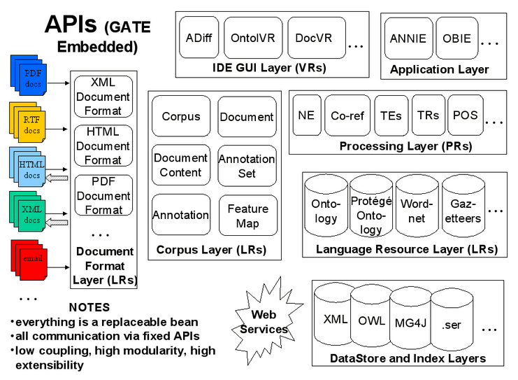

GATE
GATE(文本工程通用框架)项目开始于 1995 年英国的谢菲尔德大学.经历了近 20 年的不断发展，GATE 已经被应用于广泛的研究和项目开发。
- GATE 框架采用了基于组件的软件开发方式和面向对象的灵活编程。
- GATE 框架是由纯 Java 语言开发的免费开源软件，遵循 GNU library license。
- GATE 使用的编码方式是Unicode，可以支持多种语言编码，并且针对各种斯拉夫语言、日尔曼语言、拉丁系语言和印度语做过系统测试。
- GATE 支持的文档类型包括 XML、RTF、Email、HTML、SGML以及纯文本文件。
- GATE 作为一个框架，规定其框架内所有的自然语言处理软件系统元素都可以有效的被细分成不同的几种组件，在 GATE 中它们被称为资源。在 GATE 框架下组件的集合被称为 CREOLE。CREOLE 组件是通过 Java Beans 的形式来实现的，CREOLE 在 GATE中分为三种形式：语言组件（LR），处理组件(PR)和可视化组件(VR)。
GATE资源：

Pipeline
CorpusController
RealtimeCorpusController
SerialAnalyserController
Gazetteer
词典库（Gazetteer）由一组词典列表组成，列表包含实体名称如城市，组织机构，星期等。列表用于发现文本中包含这些名称的文档和命名实体识别。通常词“词典库”可交替地用于实体列表集合，并利用这些列表发现文本中出现这些名称的处理资源。
当词典库PR在一个文件上运行时，每个匹配的文本字符串创建一个标注类型Lookup。词典库通常不依靠Token或任何其它标注，而是基于文档的字词内容发现相匹配的字符串。这意味着一个条目可以跨越多个词，也可以把开始和结束作为一个词。
如果一个词典库正工作的文本恰好满足词语边界，则词典发现词语边界的方法不同于GATE tokeniser发现词语边界的方法。如果文本中所有词典实体匹配好了，则创建一个Lookup标注。
词典库实体怎样匹配文本的细节取决于词典库处理资源及其参数。
Gazetteer生效机制
入口:list.def
gazetteer： xx.lst
格式：gazetteerFileName:marjorType:minorType
ANNIE词典库
ANNIE词典库是由ANNIE插件提供的。每个独立的词典都是一个普通的文本文件，每行一个条目。
GAZE词典库
Gaze是一个编辑词典列表，定义词典和把词典映射到本体的工具。即适用于Plain/Linear 词典（默认）、Hash词典库也适用于Ontology-enabled 词典 (Onto词典)。每当执行保存操作时，重新初始化词典PR关联的视图。注意GAZE不生产规模非常大的词典 (我们假设不浏览超过4000实体，不拷贝超过10000个实体)。
Onto词典
Onto词典或者Hierarchical词典，是一个处理资源，能将特定词典列表的实体加入到GATE本体语言资源的类中。Onto词典指定类而不是主要或次要类型，意识到列表和类ID之间的映射关系。Gaze可视资源能显示列表，本体映射和本体类等级，也提供编辑这些内容的方法。
Hash词典
Hash词典是OntoText Lab完成的一个词典。它的实现基于几个java.util.HashMap对象简单的查找，并由Atanas Kiryakov的奇妙想法——在HashMaps的搜寻快于在有限状态机的搜寻而得到启发。Hash词典处理资源是ANNIE插件的一部分。
词典处理资源用以下方式实现：每个短语，即每一个列表条目被分割成几个部分，各部分取决于位于它们之间的空格，例如，短语：“form is emptiness”有三个部分：“form”， “is”和“emptiness”。也有一个HashMaps列表：mapsList和列表中最长的短语有同样多的元素。所以第一部分短语放在第一个映射。第一部分+空格+第二部分被放置在第二个映射等。完整的词组是放置在适当的映射，并引用一个查找对象是相连。
Flexible词典
Flexible词典提供用户灵活的弹性选择他们自己定制的输入和一个外部词典。例如，用户可能想将文本的词语替换成他们的基本形式(这是一种形态学分析仪的输出)或在运行词典之前分割中文文本(用中文Tokeniser)。
The Flexible 词典 performs lookup over a document based on the values of an arbitrary feature of an arbitrary annotation type, by using an externally provided 词典.使用外部词典是很重要的，这允许使用任何类型的词典(例如本体词典)。
词典列表collection
词典列表collection直接从一组标注的训练文本收集实体事件，构成有实体的词典列表。实体类型和词典列表的结构是由用户定义的。一旦列表collection，一个语义语法用于寻找新文本相同的实体。
如果没有列表存在，对于每个标注类型要先创建一个空列表。处理资源运行前，列表集必须加载到GATE。如果已有列表存在，列表只是简单的增加任何新实体。列表collection只收集每个实体的一个事件：在添加新的之前要先检查实体已经不存在。
OntoRoot词典
OntoRoot词典是一种动态创建的词典，即结合其他少量的通用Gate资源，对于给定的本体的内容产生基于本体的标注。这个词典是“Gazetteer_Ontology_Based”插件的一部分，已开发成为TAO项目的一部分。
大型KB词典
大型KB 词典为ontology-aware自然语言处理提供支持。你可以从RDF装载任何本体，然后使用词典获得lookup标注，标注有实例和类URI。
大型KB词典作为插件词典 LKB存在。
当前版本的大型KB 词典不使用GATE本体语言资源。相反，它使用自己的原理去加载处理本体。当前版本在不久的未来可能会显著改变。
大型KB 词典是从语义搜索平台Ontotext KIM中的一个组件学习起来的。这词典是由KIM发展团队开发的（见http://nmwiki.ontotext.com/lkb_Gazetteer/team-list.html）。在kim名称左边你可以找到源代码、资料/文件管理或源文件。
JAPE
JAPE 的全称是 a Java Annotation Patterns Engine，Java 标注模式引擎，
JAPE 提供了基于正规表达式的标注有限状态转换。JAPE 是通用模式定义语言 CPSL(Common Pattern Specification Language1)的一个版本。我们通过 JAPE 语言可以编写 GATE 能够识别的规则，通过这些规则来进行较准确的命名实体识别。
grammer-jape
入口：base.jape
MultiPhase:
Phases: 列表
jape：:xx.jape
示例：
1 | //沿西部干线由南向北行驶至六合区程桥街道荷花社区方桥河桥路段 |
relationship如何构建？
annotation和entity的关系如何构建
JAPE标注类型
- Lookup：Annie默认标注结果
- Token：Lang_Chinese，最长分词，包含符号
用途：数字，附号标注 IKAToken：IKanalyzer分词标注—-两两分词，不处理符号
- 采用了特有的”正向迭代最细粒度切分算法”，具有80万字/秒的高速处理能力
- 采用了多子处理器分析模式，支持：英文字母（IP地址、Email、URL）、数字（日期，常用中文数量词，罗马数字，科学计数法），中文词汇（姓名、地名处理）等分词处理。
- 优化的词典存储，更小的内存占用。支持用户词典扩展定义
- 针对Lucene全文检索优化的查询分析器IKQueryParser；采用歧义分析算法优化查询关键字的搜索排列组合，能极大的提高Lucene检索的命中率。
AtomToken：原子分词，最细颗粒度分词
Tokeniser Rules
Tokeniser Rules标注解析器。根据数字、标点符号和单词将文本分解成不同的Token。目的是将标记解析效率最大化，并通过语法规则（Grammar rules）减轻负担以此提高标记解析工作的灵活性。
JAPE规则包括两部分，LHS和RHS，与LHS匹配上的标注集将会按照RHS的操作执行。
LHS(left hand sode)包含正规表达式操作符（比如*, ?, +）的标注模式
| 或者- 零次或者多次发生
? 零次或者一次发生
- 一次或者多次发生
- 零次或者多次发生
RHS(right hand side)包含了标注集操作描述，格式：
{LHS} > {Annotation type};{attribute1}={value1};...;{attributen}={value n}
Token Types
Word、Number、Symbol、Punctuation、SpaceToken
JAPE优先级控制类型
- Brill: Brill 默认的控制风格，作用是在给定的范围内对文档进行匹配并添加类型，当多个匹配规则都匹配到一个文本时默认都会把相应的类型添加上去，这些类型没有重要等级。
- All: All 作用类似于Brill，但是All的匹配支持内嵌匹配
- First First只匹配第一个匹配到的匹配规则并添加对应类型，所以此时使用’*’,’?’或’+’这类匹配规则是不恰当的
- Once: Once 一旦匹配到匹配规则，则整个JAPE解析直接退出
- Appelt: Applet 根据优先规则，匹配唯一一个匹配规则
JAPE高亮插件
找到一个Linux平台的，gedit的插件：jape-syntax-highlighting，待尝试
当前处理方式
- myeclipse设置*.jape默认打开程序为sublime text
General>Editors>File Associations - 在sublime text代开jape后缀文件，并将Syntax设置为open all with current extention as java
- sublimet text3安装SublimeAStyleFormatter插件进行代码格式化
ctrl+alt+f: Format current filectrl+k, ctrl+f: Format current selection
TODO：暂不能自动格式化jape，和语法高亮报错
正则表达式
relationshioType的定义原理
sentence（有限状态机）包含关系，根据实际情况定义
Temporal+SpacePattern(Region+Path)+person
GATE在多线程中的配置
Using GATE Embedded in a Multithreaded Environment
All the standard ANNIE PRs are safe when independent instances are used in different threads concurrently, as are the standard transient document, transient corpus and controller classes. A typical pattern of development for a multithreaded GATE-based application is:
* Develop your GATE processing pipeline in GATE Developer.
* Save your pipeline as a .gapp file.
* In your application’s initialisation phase, load n copies of the pipeline using `PersistenceManager.loadObjectFromFile()` , or load the pipeline once and then make copies of it using `Factory.duplicate`, and either give one copy to each thread or store them in a pool (e.g. a LinkedList).
* When you need to process a text, get one copy of the pipeline from the pool, and return it to the pool when you have finished processing.
Alternatively you can use the Spring Framework as described in the next section to handle the pooling for you.
Spring pooling
问题记录
spring集成开发的plugin如何在gate中运行
由于插件最终需在gate框架中运行，建议以maven进行项目包/结构管理，fatjar编译打包；
- 参考Lang_Chinese插件修改gapp(根据creole.xml)，新增PR配置
gapp参考
配置文件参考
1 |
|
- 将插件复制于GATE\plugins根目录内；
- 在gate中手动配置PR顺序，执行标注无误后，另存为gapp
urlList新增URLHolder
1 | <gate.util.persistence.PersistenceManager-URLHolder> |
- CollectionPersistence新增PRPersistence
1 | <gate.util.persistence.PRPersistence> |
Jface运行GATE环境路径设置问题
问题：GATE环境，以Fatjar打包JFace程序，错误日志：
1 | Could not check plugin-mappings.xml |
解决：路径问题，单斜杠改成双斜杠
1 | //错误 |
gate插件加载错误
- 错误日志
1 | gate.creole.ResourceInstantiationException: Could not get resource data for gate.creole.gazetteer.DefaultGazetteer. |
问题定位：需要在GATE中注册ANNIE插件，初始化后千万别忘得了！
解决方案：
1 | private static boolean initialized = false; |
Linux中gate初始化错误
- 错误日志
1 | Using file:/uadb/uadb.etl.pre/resources/gate/%5Cresources%5Ccreole/ as built-in CREOLE directory URL |
问题定位：window下用的\和\符号在linux下和unix下不可用
解决方案：路径符号由\改成//
Spring集成GATE，Fatjar打包后的标注乱码问题
- 问题描述：main和junit测试标注正常，但fatjar打包后的程序业务标注未生成
应标注：[Number, Token, Lookup, SpaceToken, Split, Sentence, IKAToken, AtomToken, Context, Place, Mapcode, Location, Region,Scale, Entity]
实际标注：[Split, Token, SpaceToken, DEFAULT_TOKEN, Sentence, IKAToken,AtomToken] - 问题定位
chineseNE子管道配置的标注有问题，多出个DEFAULT_TOKEN，Sentence正常标注，但未生成Number和Lookup标注， - 解决方案
gate环境用spring集成，程序是调用gapp执行标注piopeline，jape和gazetteer等资源都是外部化的，为什么不行？
进行各种测试排除，发现输出日志中错误的都是乱码，断定是读文件的编码问题！！！这种问题，解决过程中纠结的要死，解决了感觉自己绝逼傻透了！
想起那首记忆深刻的程序员之诗，手持两把锟斤拷，口中直呼烫烫烫，脚踏千朵屯屯屯，笑看万物锘锘锘
1 | //错误 |
Gazetteer问题
- 问题描述：Correct format for gazetteer entry features is: entry*
- 解决：gazetteer辞典中不能带有冒号，会识别成
list.def然后抛错